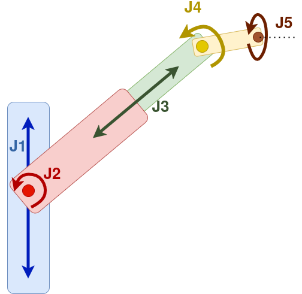

cb_sprayarm packages overview
This workspace contains packages for controlling and simulating the spray arm robot. Below is a brief description of each package/folder and important notes for running the system.
Software Architecture
graph BT
subgraph Low Level
CAN[cb_canopen_motor_node]
end
subgraph ROS Control
HW[cb_hardware_interface]
CONTROL[cb_sprayarm_control]
end
subgraph MoveIt
KIN[cb_kinematics]
KINP[cb_kinematics_plugin]
MOVEITP[cb_moveit_plugins]
end
subgraph Planning & Execution
MI[cb_motion_interface]
CEIL[cb_ceiling_spray]
end
subgraph Config
MOVEITCFG[cb_sprayarm_moveit_config]
TIMINGS[cb_sprayarm_timings]
end
subgraph Application
PLANNING[cb_sprayarm_planning]
end
subgraph Launch/Simulation
GAZEBO[cb_sprayarm_gazebo]
SETUP[cb_sprayarm_setup]
end
CAN --> HW
HW --> CONTROL
CONTROL --> KINP
KIN --> KINP
KINP --> MI
MI --> MOVEITP
MOVEITP --> MOVEITCFG
MI --> TIMINGS
KINP --> MOVEITCFG
MOVEITP --> PLANNING
MOVEITP --> CEIL
MOVEITCFG --> SETUP
SETUP --> GAZEBO
Package Descriptions
-
cb_canopen_motor_node
Contains nodes and code for interfacing with motors via the CANopen protocol. Used for low-level motor control and communication. Adaption of canopen_motor_node from ros_canopen -
cb_ceiling_spray
Implements the main logic for the ceiling spray application, including the core node that manages spraying actions. -
cb_hardware_interface
Provides hardware interface classes and nodes for integrating the spray arm hardware with ROS control and MoveIt. It uses configuration files (such as the joint limits) from cb_config. -
cb_kinematics
Contains custom inverse and forward kinematics for the spray arm, used for motion planning and control. It does not directly interface with MoveIt or ROS but the inverse kinematics is used through the cb_kinematics_plugin. -
cb_kinematics_plugin
Implements a MoveIt kinematics plugin for the spray arm, allowing custom kinematics to be used in MoveIt motion planning. -
cb_motion_interface
Provides high-level motion planning and execution for the spray arm, integrating with MoveIt! and the rest of the ROS system. Specifically, it: - Plans and executes application specific arm motions (normal, forward kinematics and spray lines).
- Capable of selecting an appropriate planner and retrying if a planner fails.
- Dynamically updates planning parameters (timings, angles) via dynamic reconfigure
- Manages the MoveIt! planning scene with collision objects and workspace constraints for safe planning. Adapts the planning scene based on the planning request or based on additional rostopics.
- Synchronizes nozzle (spray) commands with arm trajectories by calculating the timings (planSprayTrajectory) to trigger on/off the valve based on the planned trajectory. It does so by using the planned instead of the real trajectory. This has to be changed.
- Publishes planned trajectories for visualization in RViz
- Offers services and interfaces for moving to home position, planning spray lines, and more.
While planning motion trajectories (without spray application) is done using MoveIt! and OMPL, planning a spray line is done by cb_trajectory_planner.cpp which is responsible for:
- generating smooth, feasible joint trajectories, taking into account safety and limits.
- handling acceleration/deceleration and nozzle synchronization.
- providing utility functions for trajectory processing.
- cb_moveit_plugins
Contains custom MoveIt! plugins/capabilities (e.g., planners, controllers, or sensors) tailored for the spray arm. These include: - Triggering the spray valve capability.
- Control the robot arm with a jog (manually).
- Simple: Moves (both planning and execution) the robot arm.
-
Velocity: Moves (both planning and execution) the robot arm to the home position, based on velocity control. (Not used)
-
cb_sprayarm_control Implements and configures controllers to run the sprayarm (see Ros Control). Custom controllers we implement: PLC sprayarm Controllers for handling the emergency state.
-
cb_sprayarm_gazebo
Simulation package for running the sprayarm in Gazebo, loading the robot model and simulation plugins. -
cb_sprayarm_moveit_config
MoveIt configuration package for the spray arm, including move group and MoveIt! setup files. -
cb_sprayarm_planning
Implements planning algorithms and nodes specific to the spray arm’s tasks (e.g. path planning for spraying). When a planning request comes in (for movement, forward kinematics, or spray), the plan manager computes a hash key based on the request parameters (eg start and goal states). It checks if a plan with that key already exists in a cache (map). If yes, it retrieves it and returns the cached plan (no need to plan again). Otherwise computes a new plan, and stores it for future use. Using the hash value you can manually retrieve and then visualize a previous plan, by using either of the following services, depending if it's a normal, a forward kinematic, or a spray movement: - from_map_movement_server_
- from_map_fk_server_
- from_map_spray_server_
You can force plan, instead of using a previous hashed plan, by setting the ROS parameter /config/sprayarm/settings/force_plan to true. The relevant configuration for it, can be found in cb_config/process_configs/process.yaml.
The three types of motions implemented so far are:
- Normal movements (OMPL Planner): Standard motion plans generated by MoveIt using the OMPL library, for moving the arm from one pose to another, avoiding obstacles and following constraints.
- Forward kinematics movement: Moves the arm by directly specifying joint values (planning in the joint - not cartesian space). It computes the resulting end-effector pose given the joint values. Useful for precise joint control. If the specify_start variable, is set to true, then you have to specify the start position, otherwise it uses the current one.
- Sprayline movements: Motion planning for following a spray line or pattern. It consists of a list of pairs (a, b), where a is the trigger on position and b the trigger off position for the spray valve.
Another important configuration that this package uses is the cb_config/arm_configs/arm_*/timings.yaml. The spray valve is triggered based on time (rather than coordinates). In this configuration file, you may change the start/stop valve timings for each side (left/right), for each movement (up/down), as well as the angle of the valve (may be different than 90 degrees due to a hardware offset) and the servo (which won't be necessary from arm06 onwards).
- cb_sprayarm_setup
Contains launch files and setup scripts for bringing up the entire spray arm system, both in simulation and on real hardware. -
cb_sprayarm.launchis the main launch file. -
cb_sprayarm_timings
Provides timing calculations and utilities, to make calibrating the timings easier. The UI calibration feature also uses this.
Dependencies
The robot urdf model and srdf description is not part of the cb_sprayarm repository anymore but is now located inside cb_sprayarm_description. All dependencies: - cb_sprayarm_description: Urdf and srdf files for the robot
-
cb_msgs: Custom ros msg types
-
cb_config: Configuration files for specific hardware. One Arm and one Base has to be selected by setting the environment variables
ARM_NUMBER=04andBASE_NUMBER=04(or different numbers) -
cb_utils: independent functions like macros for urdf or colors for printouts
Running the System
The arm can be loaded without further functionality from the cb_sprayarm_setup repository:
-
Simulation:
To start the system in an rviz simulation:roslaunch cb_sprayarm_setup cb_sprayarm_fake_rviz.launchMake sure to set required ROS parameters (see launch file documentation or add missing params as needed).
-
Real Hardware:
roslaunch cb_sprayarm_setup cb_sprayarm.launchEnsure all hardware interfaces are connected and configured.
-
Gazebo:
Use cb_sprayarm_gazebo for running the robot in simulation with physics.
If the arm you want to run a full simulation or start the real arm you need more repositories like cb_core, cb_bringup and more.
-
Testing simulation in rviz:
roslaunch cb_bringup start_sprayarm_sim.launch -
Gazebo simulation:
roslaunch cb_bringup start_sprayarm_gazebo.launch -
**Standalone real arm on test stand: **
roslaunch cb_bringup start_sprayarm_real_standalone.launch
- **Real Arm on Robot: **
roslaunch cb_bringup start_sprayarm_real.launch
- **Start full robot: **
roslaunch cb_bringup start_all_real.launch
Typically on the robot there are already some nodes running. In this case you can use the UI and initialization button. This will launch the whole robot using catmux scripting.
Low-level architecture
The robotic arm v6 has 5 motors:

The Arm control box contains a carrier PCB which connects all other PCBs it also provides power and data connection to the base. The following PCBs are connected to the carrier board: - 5 Motorcontroller PCBs in row. Starting with motor 1 (M1) as the lowest board. - They are attached to with sandwich pcb directly to the carrier board. - A custom PCB for - M1-M3 brake control (transistors that set brake signal from 5v to 24v) - ESP32 with USB connection used for - Spray nozzle control - LED light rgb control. - The custom pcb manual cable connections for brake, data, and power connection
There are two 24V power cables and one 48V. They are used for: 1) 24V: Brakes 2) 24V: Logic 1) 48V: Motors
If the emergency controller is triggered, this disconnects the PCBs of the motors from the brakes and motors power cables, but leaves the logic power cable ON.
For data communication, the control box is connected via can and USB3. Can is connected to the 5 Motorcontrollers, USB3 is connected to a USB hub which divides the signal to: - Realsense camera front - Realsense camera back - The ESP32 on the custom PCB for LED and Nozzle control